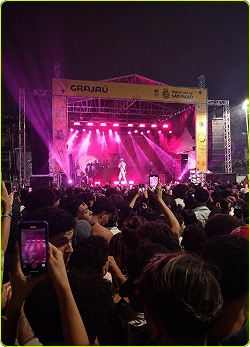
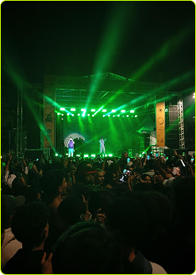
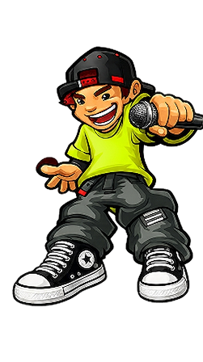

as vozes das ruas transforma cidades
O Grajaú Rap City é um evento de batalhas de rima da zona sul de São Paulo, realizado desde 2017.
Mais do que uma competição de freestyle, o projeto representa a força da cultura hip-hop na periferia,
reunindo artistas, MCs e a comunidade em um espaço de expressão, arte e transformação social.
Foi criado por um coletivo de artistas locais, incluindo nomes como JPA, Gah MC e Ladakipnis.


Do Bronx para o mundo
O Hip Hop nasceu nos anos 70 no bairro do Bronx, em Nova York, entre jovens negros e latinos que viviam em meio à pobreza, à violência e à falta de oportunidades. Um dos pioneiros foi DJ Kool Herc, que organizava festas de rua repetindo os "breaks" instrumentais enquanto o público rimava e dançava — assim nascia uma cultura inteira.
O hip hop chegou ao Brasil nos anos 80, principalmente em São Paulo. As batalhas de rima cresceram muito nas periferias e praças públicas, tornando-se espaços de cultura, resistência e oportunidade para jovens artistas. Um dos lugares mais importantes para o rap brasileiro foi a região da Estação São Bento, onde grupos de hip hop se reuniam para dançar, rimar e trocar experiências.


Os destaques que levantaram o público.


A energia das batalhas vista de perto.
Cada Batalha - Uma Linguagem
Batalha de Sangue
Mais agressiva, focada em ataques diretos ao adversário.
Batalha de Tema
Os MCs recebem palavras ou temas para improvisar na hora.
Batalha de Conhecimento
Política, história, racismo, filosofia e crítica social.
Batalha de Dupla/Trio
MCs rimam em equipe, somando estilos e flows.
Batalhas famosas
Batalha da aldeia Batalha do tanque Batalha do Roosevelt

Encontros que fortalecem a cultura local.


O Que é Batalha de Rima - Improvisto, criatividade e impacto social
As batalhas de rima são disputas entre MCs que improvisam versos em tempo real sobre temas livres ou palavras escolhidas na hora. Mais do que vencer, o que importa é a criatividade, o raciocínio rápido, a presença de palco e a capacidade de impactar o público, uma expressão genuína das periferias e comunidades marginalizadas.